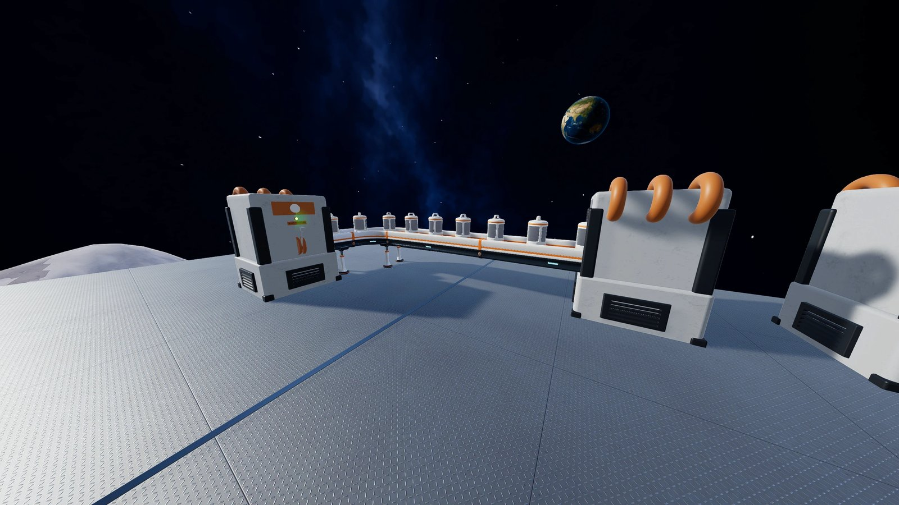

What it does
Any number of each
A channel can have any number of inputs and outputs. The outputs take turns, and a full receiving belt is skipped.
Channels and folders
Walk up to an adapter and press E: create, rename and assign channels, and organise them into nested groups with drag and drop.
Names file themselves
Name channels like Iron-Line-2 and they're filed into Iron > Line as "2", reusing folders that already exist.
See it at a glance
ready or working
blinking: nothing on the other side, or the belt is full
no channel, or no belt
The host moves capsules
Channel changes made by the host reach everyone. Saves from 1.x load unchanged.
In-game, with LunarLink
It names its GitHub releases, so LunarLink's F9 UPDATES tab installs new versions in place.
How capsules travel
A belt runs into a Quantum Input; a Quantum Output starts a belt somewhere else. Same channel, and the capsules jump across.
flowchart LR
subgraph here["Where the capsules are made"]
belt1["A belt"] --> qi["Quantum Input
(takes capsules
off the belt's end)"]
end
qi -- "channel Iron > Line > 2" --> ch(("Channel"))
subgraph there["Where they're needed"]
qo1["Quantum Output"] --> b2["A belt"]
qo2["Quantum Output"] --> b3["A belt"]
end
ch -- "outputs take turns" --> qo1
ch --> qo2
Built for big bases
2.0 rewrote 1.x's internals so nothing runs per adapter per frame: capsules move when MoonFramework offers one, each channel keeps its own lists, and a full channel isn't asked again until the next pass. Measured with 1,480 adapters, against 1.1.2:
| Measure | Change |
|---|---|
| Frames per second | +43% |
| Whole frame | -30% |
| Game and mod scripts | -35% |
| MoonFramework driver (all framework machines) | -54% |
| Capsule hand-offs | -41% |
| Power step | -35% |
| Adapters' per-frame Tick | -100% |
Each MoonFramework patch fails closed: if MoonFramework changes, that patch is skipped, the log says so, and the adapters still work the slow way. How it works →
Install
- Install BepInEx 6, the Moon Sweepers patcher and MoonFrameworkBepInEx 6.0.0-be.791 (Unity.IL2CPP, win-x64), the MoonSweepers BepInEx Patcher, and MoonFramework; run the game once.
- Download itFrom Nexus Mods or the latest GitHub release.
- Put the DLL in place, with the game closed
BepInEx/plugins/QuantumConveyors/QuantumConveyors.dll. That one file is the whole mod. Updating from 1.x: delete the folder's other files (models, pictures). - Start the gameThe adapters are in the Building Tool's Logistics tab.
On its own, or hot with LunarLink
Quantum Conveyors runs on its own: a normal BepInEx plugin. With LunarLink, a free plugin that loads plugins from BepInEx/hot/, it reloads and updates while the game runs, and tools can drive it over HTTP.
| On its own | With LunarLink | |
|---|---|---|
| Install it in | BepInEx/plugins/QuantumConveyors/ | BepInEx/hot/QuantumConveyors.dll (straight in, not in a subfolder) |
| Updating | Download, close the game, replace the DLL, start again | F9 → UPDATES → Update: installed in place, no restart. Every adapter's machine is swapped for the new copy's, from the same saved data |
| Turning it off | Remove the DLL, restart | F9 → HOT PLUGINS → Disable: transfers stop and it's unloaded from memory |
| Scripts and tools | - | HTTP requests under /quantum/: channels, adapters, groups, and how much each channel moved |
Not in both folders: a plugin in both would load twice, so LunarLink refuses the hot copy. Changing the adapters themselves (model, ports, price, names) still needs a game restart.
For tools: HTTP requests
With a mod that passes HTTP requests on to plugins, such as LunarLink (127.0.0.1:8765), Quantum Conveyors answers under /quantum/. Reads are GET; changes are POST and work on the host only.
GET /quantum | Summary: channels, groups, inputs, outputs, capsules pending |
GET /quantum/flow | Per channel: capsules moved lately, and receivers that placed none |
GET /quantum/channels · /adapters · /groups | Every channel, adapter and group |
POST /quantum/channels/… · /adapters/modify · /groups/… | Create, rename, move, assign and delete, as the menu does |
Read more
The wiki
Installing, the menu, Auto Group, settings, crew games, troubleshooting.
API
The /quantum/ requests: what each is for, parameters, example answers.
Changelog
What changed in each version.
Nexus Mods
Downloads, posts and endorsements.
LunarLink
Run it hot: reload and update in place, no restart.
Report a problem
Bug reports, feature requests and questions.